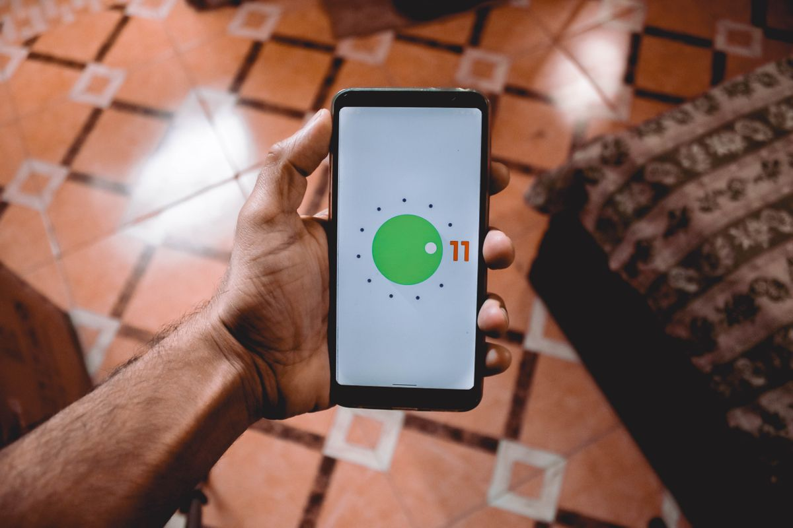
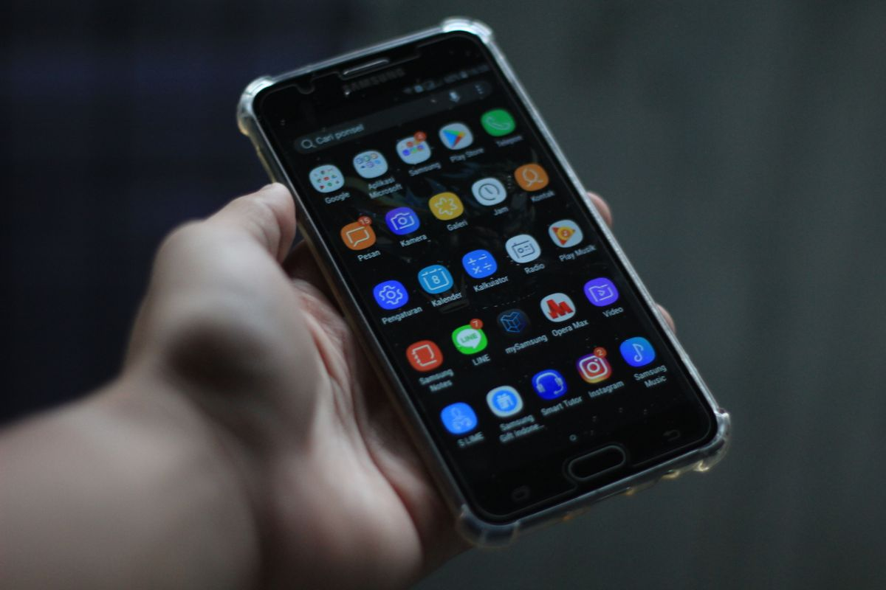
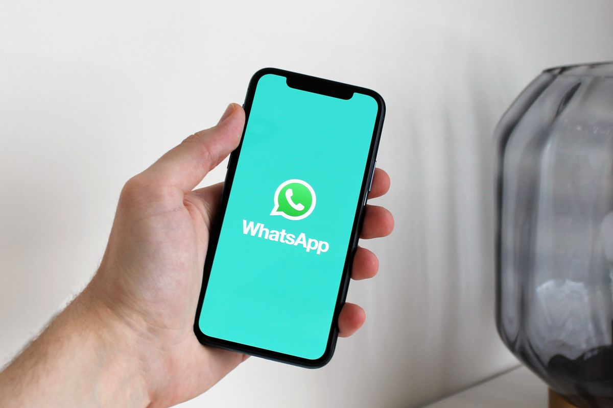

HP kamu dulu ngebut, sekarang buka WhatsApp saja butuh beberapa detik dan pindah antar aplikasi sering tersendat. Gejalanya khas: aplikasi butuh waktu lama untuk terbuka, layar tersendat saat berpindah menu, dan HP cepat panas padahal dipakai biasa. Tenang, dalam banyak kasus ini bukan tanda HP rusak. Penyebab paling umum adalah penyimpanan internal yang hampir penuh ditambah cache aplikasi yang menumpuk selama berbulan-bulan. Kabar baiknya, kamu tidak perlu menginstal aplikasi pembersih tambahan yang justru sering dipenuhi iklan. Semua langkah di artikel ini memakai fitur bawaan Android dan aplikasi resmi Google, dan masih berlaku per November 2026.
1. Hapus cache aplikasi yang paling rakus
Cache adalah data sementara yang disimpan aplikasi supaya loading terasa cepat. Masalahnya, cache bisa terus membengkak selama berbulan-bulan dan justru membuat sistem berat. Membersihkannya aman karena data login dan pengaturanmu tidak ikut terhapus. Caranya:
- Buka Pengaturan lalu pilih Aplikasi.
- Ketuk Lihat semua aplikasi.
- Pilih aplikasi yang paling sering kamu pakai, misalnya browser atau media sosial.
- Masuk ke Penyimpanan dan cache, lalu ketuk Hapus cache.
Ingat, yang ditekan adalah Hapus cache, bukan Hapus penyimpanan atau Hapus data. Pilihan kedua itu akan menghapus pengaturan, sesi login, dan file internal aplikasi sehingga kamu harus login ulang. Fokuskan pada aplikasi yang paling sering kamu pakai seperti browser, media sosial, dan aplikasi belanja karena biasanya menyimpan cache paling besar. Satu hal yang perlu kamu tahu: sesudah cache dihapus, aplikasi itu akan sedikit lebih lambat saat pertama kali dibuka karena harus membangun ulang data sementaranya, tapi sesudahnya berjalan normal.

2. Sapu bersih file sampah dengan Files by Google
Files by Google adalah aplikasi resmi Google yang gratis, ringan, dan tanpa iklan. Menurut halaman aplikasinya di Play Store, ukurannya di bawah 20 MB. Di dalamnya ada tab Bersihkan yang mengelompokkan biang kerok penyimpanan: file sampah, file duplikat, screenshot lama, meme, sampai aplikasi yang jarang dipakai. Caranya:
- Unduh Files by Google di Play Store kalau belum ada.
- Buka aplikasinya, ketuk ikon menu, lalu pilih Bersihkan.
- Tinjau tiap kategori rekomendasi dan hapus yang memang sudah tidak kamu butuhkan.
Kamu juga bisa membuka kategori Unduhan lalu mengurutkannya dari yang terbesar untuk menemukan file raksasa yang terlupakan, misalnya video berukuran sangat besar. Menghapus beberapa file besar seperti ini sering memberi ruang lebih banyak daripada menghapus puluhan file kecil. File yang kamu hapus lewat aplikasi ini umumnya masuk dulu ke folder Sampah selama 30 hari sebelum hilang permanen, jadi masih ada kesempatan membatalkannya. Tinjau dulu isi tiap kategori sebelum menekan hapus, jangan asal setujui semua rekomendasi.

3. Buang aplikasi yang sudah tidak dipakai dan ringankan WhatsApp
Aplikasi yang jarang dibuka tetap memakan ruang penyimpanan dan sebagian berjalan di latar belakang. Buka Pengaturan, pilih Aplikasi, lalu hapus aplikasi yang sudah berbulan-bulan tidak kamu sentuh. Untuk aplikasi bawaan yang tidak bisa dihapus, biasanya ada opsi Nonaktifkan di halaman info aplikasinya. Jangan menonaktifkan aplikasi sistem penting seperti Layanan Google Play karena bisa bikin sistem error.
Jangan lupa WhatsApp yang sering jadi penyumbang terbesar: buka Setelan WhatsApp, pilih Penyimpanan dan data, lalu Kelola penyimpanan. Di sana kamu bisa menghapus file berukuran lebih dari 5 MB atau yang sudah diteruskan berkali-kali tanpa menghapus chat penting.

4. Kecilkan animasi supaya HP terasa lebih responsif
Trik ini tidak menambah kecepatan prosesor, tapi membuat transisi antar menu terasa jauh lebih gesit. Aktifkan dulu Opsi Pengembang dengan membuka Pengaturan, pilih Tentang ponsel, lalu ketuk Nomor bentukan sebanyak 7 kali sampai muncul notifikasi. Sesudah itu buka Opsi Pengembang dan ubah tiga pengaturan berikut ke 0,5x: Skala animasi jendela, Skala animasi transisi, dan Skala durasi animator. Kamu juga bisa mematikannya total kalau mau yang paling cepat.
5. Restart rutin dan jangan tunda update
Mematikan lalu menyalakan ulang HP terdengar sepele, padahal langkah ini menutup tumpukan proses latar belakang yang membebani sistem. Usahakan restart minimal seminggu sekali. Sekalian juga perbarui aplikasi lewat Play Store dan cek Pembaruan sistem di Pengaturan, karena update biasanya membawa perbaikan bug dan peningkatan performa.
Mulailah dari langkah pertama dan kedua karena keduanya memberi efek paling terasa dalam beberapa menit. Jaga juga sisa ruang penyimpananmu, karena Android butuh ruang lega untuk bekerja normal dan kamu sebaiknya mulai waspada saat sisanya tinggal di bawah 10 persen. Kalau sesudah semua langkah di atas HP masih sangat lemot, reset pabrik bisa jadi pilihan terakhir, tentu sesudah semua data penting dicadangkan. Lakukan pembersihan ini sebulan sekali supaya HP tetap enak dipakai tanpa harus ganti perangkat.
Sumber dan Info Resmi
Fakta dan detail di artikel ini merujuk ke sumber berikut, yang sudah diverifikasi isinya:
- TiraiNews: alur Hapus cache, perbedaan Hapus cache vs Hapus data, anjuran waspada saat sisa penyimpanan di bawah 10 persen, dan larangan menonaktifkan aplikasi sistem penting.
- AplikasiNeAndroid: Hapus cache aman untuk data login, alur WhatsApp Kelola penyimpanan untuk menghapus file di atas 5 MB.
- Support Google (Files): tab Bersihkan di aplikasi Files by Google.
- Play Store: aplikasi Files by Google resmi dari Google, gratis, ukuran di bawah 20 MB, tanpa iklan.
- Android Police: file yang dihapus lewat Files by Google masuk folder Sampah selama 30 hari.
- Mayuhmacah: mengaktifkan Opsi Pengembang dengan mengetuk Nomor bentukan 7 kali, tiga skala animasi diubah ke 0,5x.
- Qoo10: anjuran restart minimal seminggu sekali, memperbarui aplikasi dan sistem, reset pabrik sebagai pilihan terakhir.